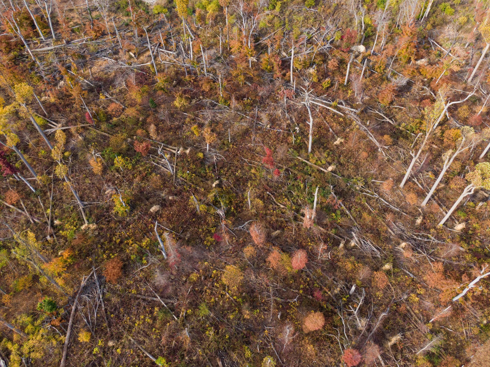
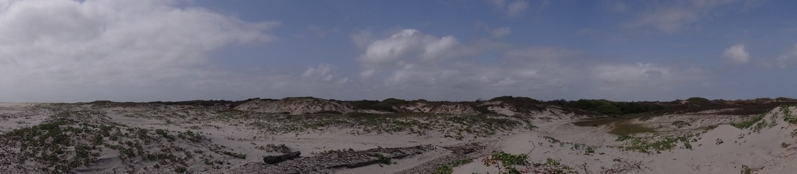
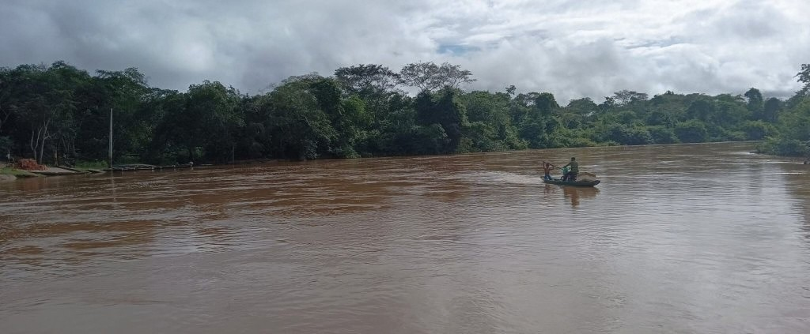

RESEARCH PROJECTS
Investigating functional traits, disturbance dynamics, and forest recovery strategies
Functional Traits, Evolutionary History & Forest Recovery
I examine how species characteristics, such as wood density, dispersal strategies, regeneration mechanisms, and resprouting ability, influence regeneration, community composition, and ecosystem functioning, and how these responses may vary under passive, active, and mixed management strategies.
By integrating empirical forest data with ecological modeling, my research explores how forests may respond to contrasting climate and disturbance scenarios and seeks to identify the ecological processes that support resilient and self-sustaining forests in a changing climate.

Previous Field & Laboratory Research

Coastal Plant Ecology & Restinga Vegetation
My M.S. research, conducted at the Botanical Studies Laboratory, examined how vegetation structure, plant diversity, and soil conditions interact to shape woody plant communities in Amazonian coastal restinga ecosystems.
I integrated floristic and phytosociological surveys with soil measurements to investigate how nutrient availability and environmental heterogeneity influence community structure. Results revealed strong associations between edaphic variation and spatial patterns in vegetation.

Riparian & Floodplain Vegetation Dynamics
My undergraduate research in Oceanography examined how vegetation responds to environmental gradients, anthropogenic disturbance, and marine influence in riparian and floodplain ecosystems of northeastern Brazil.
Research in the lower Pindaré River system linked soil chemistry and vegetation structure across gradients of freshwater and saltwater influence, documenting changes in igapó vegetation with increasing marine influence.